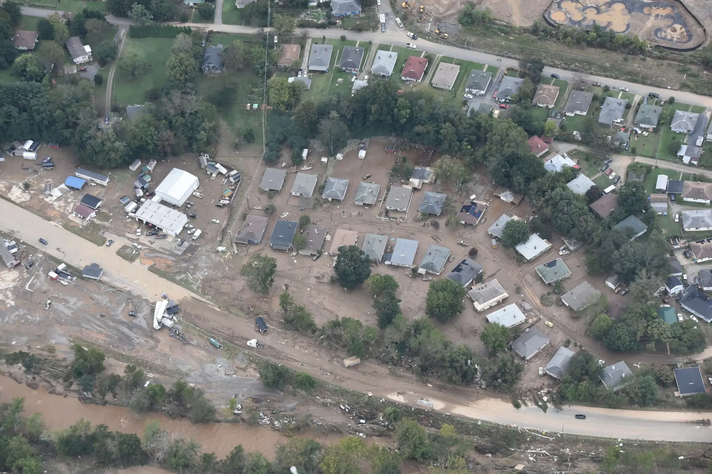
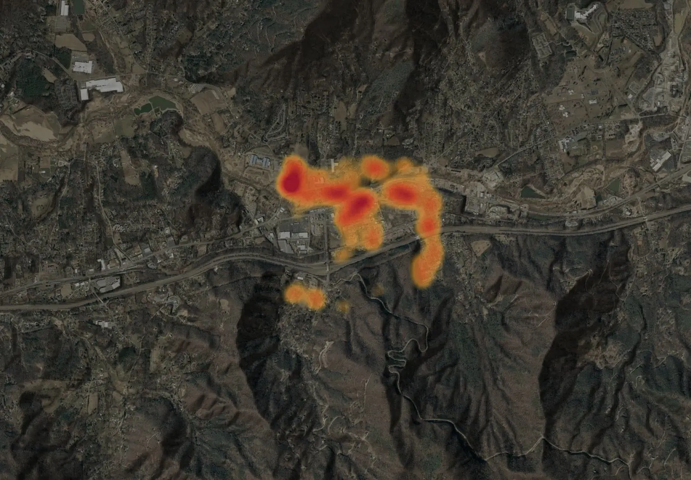

<title>NC Recon Disaster Assessment</title>
<meta name="claude:viewport-fit-sides" content="cover">
<meta name="description" content="NC Recon reads public imagery after a disaster and calls the damage to every building, then shows roads likely cut, landing-zone candidates and search sectors. Free and open source. Explore the Swannanoa valley after Hurricane Helene in 3D.">
<meta name="theme-color" content="#0B0B0B">
<link rel="icon" href="data:image/svg+xml,__FAVICON__">
<link rel="preload" as="font" type="font/woff2" href="assets/web/fonts/archivo-latin-standard-normal.woff2" crossorigin>
<style>
/* Hallmark · macrostructure: Marquee Hero, cut like the launch film · tone: austere, technical · anchor hue: signal orange
 * theme: custom, atmospheric · vibe: launch film, hard cuts, near-black, one orange tile
 * paper #0B0B0B · ink #F5F3EE · signal #FF5A1F · Archivo expanded + Archivo + IBM Plex Mono
 * axes: dark / expanded-grotesk / warm · nav: N5 floating bar, square · footer: Ft5 statement
 * enrichment: hero tile wall (canvas, one tile per building), real CAP photograph, live WebGL terrain
 * hex tokens are deliberate: the WebGL and canvas code reads them, and three.js does not parse oklch
 * pre-emit critique: P5 H5 E4 S5 R4 V5 */
@font-face { font-family: "Archivo"; src: url("assets/web/fonts/archivo-latin-standard-normal.woff2") format("woff2"); font-weight: 100 900; font-stretch: 62% 125%; font-style: normal; font-display: swap; }
@font-face { font-family: "IBM Plex Mono"; src: url("assets/web/fonts/ibm-plex-mono-latin-500-normal.woff2") format("woff2"); font-weight: 500; font-style: normal; font-display: swap; }

:root {
  /* brand */
  --black: #0B0B0B; --white: #F5F3EE; --signal: #FF5A1F;
  /* surfaces, dark by default; .light flips them for one band */
  --bg: #0B0B0B; --bg-2: #161615; --sheet: #111110; --ink: #F5F3EE; --ink-2: #BFBDB6; --ink-3: #94928B;
  --line: #262624; --line-2: #3F3E3A; --btn: #F5F3EE; --on-btn: #0B0B0B; --tile: #191918;
  /* map and data, hex because the WebGL and canvas code reads them */
  --paper: #2A2A27; --contour: #A8A69E; --map-bg: #0B0B0B; --sector: #F5F3EE; --sector-ink: #0B0B0B; --ring: #F5F3EE;
  --lz: #2FA67A; --on-lz: #0B0B0B;
  --d0: #98A09A; --d1: #E2B33A; --d2: #E1852C; --d3: #CC4A28; --d4: #9E1A2C; --dep: #D6802E; --scour: #3478C4;
  --code-bg: #161615; --code-ink: #EDEBE4; --code-dim: #94928B;
  /* type */
  --sans: "Archivo", "Helvetica Neue", Helvetica, Arial, system-ui, sans-serif;
  --mono: "IBM Plex Mono", ui-monospace, "SFMono-Regular", Menlo, monospace;
  --wide: 104%; --heavy: 720;
  /* space and motion */
  --measure: 100rem; --gutter: clamp(1.25rem, 4vw, 3.5rem); --nav-h: 4.75rem; --band: clamp(4.5rem, 10vw, 9rem);
  --ease-out: cubic-bezier(0.16, 1, 0.3, 1); --dur-micro: 120ms; --dur-long: 420ms;
  --arrow: url("data:image/svg+xml,%3Csvg xmlns='http://www.w3.org/2000/svg' viewBox='0 0 16 16'%3E%3Cpath d='M1 8h12.5M8.5 3 13.5 8l-5 5' fill='none' stroke='%23000' stroke-width='2'/%3E%3C/svg%3E");
  color-scheme: dark;
}
@media (min-width: 40rem) { :root { --wide: 116%; } }
.light {
  --bg: #F5F3EE; --bg-2: #EAE7DF; --sheet: #FBFAF6; --ink: #0B0B0B; --ink-2: #45443F; --ink-3: #66645E;
  --line: #D9D6CD; --line-2: #B4B0A5; --btn: #0B0B0B; --on-btn: #F5F3EE;
  background: var(--bg); color: var(--ink);
}

* { box-sizing: border-box; }
html, body { overflow-x: clip; }
html { scroll-padding-top: var(--nav-h); }
body { margin: 0; background: var(--bg); color: var(--ink); font: 400 1.0625rem/1.5 var(--sans); font-stretch: 100%; -webkit-font-smoothing: antialiased; -moz-osx-font-smoothing: grayscale; }
a { color: inherit; text-underline-offset: 3px; text-decoration-thickness: 1px; }
:focus-visible { outline: 2px solid currentColor; outline-offset: 3px; }
.btn:focus-visible, .tabs button:focus-visible, .menu summary:focus-visible { outline-color: var(--ink); }   /* a filled control's label is the band's colour */
img { max-width: 100%; }
.wrap { width: 100%; max-width: var(--measure); margin-inline: auto; padding-left: max(var(--gutter), env(safe-area-inset-left, 0px)); padding-right: max(var(--gutter), env(safe-area-inset-right, 0px)); }
h1, h2, h3 { font-weight: var(--heavy); font-stretch: var(--wide); font-style: normal; margin: 0; letter-spacing: -0.02em; text-wrap: balance; overflow-wrap: anywhere; min-width: 0; }
h1 { font-size: clamp(2.5rem, 7.6vw, 7.75rem); line-height: 0.98; letter-spacing: -0.03em; }
h2 { font-size: clamp(2.2rem, 6.4vw, 6rem); line-height: 1; letter-spacing: -0.028em; }
p { margin: 0; max-width: 62ch; }
.cap { font-size: 0.875rem; line-height: 1.45; color: var(--ink-3); }
.mono { font-family: var(--mono); }
.vh { position: absolute; width: 1px; height: 1px; overflow: hidden; clip-path: inset(50%); white-space: nowrap; }
.arr { display: inline-block; flex: none; width: 1em; height: 1em; vertical-align: -0.12em; background: currentColor; -webkit-mask: var(--arrow) center / contain no-repeat; mask: var(--arrow) center / contain no-repeat; }
.arr.out { transform: rotate(-45deg); }
.arr.up { transform: rotate(-90deg); }

/* buttons: square, like the tiles */
.btn { display: inline-flex; align-items: center; justify-content: center; gap: 0.5rem; min-height: 3rem; padding: 0 1.4rem; border: 1px solid var(--btn); background: var(--btn); color: var(--on-btn); font: 600 1rem/1 var(--sans); text-decoration: none; white-space: nowrap; cursor: pointer; }
.btn:active { transform: translateY(1px); }
.btn.ghost { background: transparent; color: var(--ink); border-color: var(--line-2); }
.btn.signal { background: var(--signal); border-color: var(--signal); color: var(--black); }
.btn.small { min-height: 2.5rem; padding: 0 0.9rem; font-size: 0.9rem; }
@media (hover: hover) {
  .btn:hover { background: transparent; color: var(--ink); }
  .btn.ghost:hover { background: var(--btn); color: var(--on-btn); border-color: var(--btn); }
  .btn.signal:hover { background: var(--white); border-color: var(--white); color: var(--black); }
}

/* top bar: one floating bar, square */
.top { position: fixed; z-index: 30; top: 0.625rem; left: max(0.625rem, env(safe-area-inset-left, 0px)); right: max(0.625rem, env(safe-area-inset-right, 0px)); display: flex; align-items: center; gap: 1.75rem; height: 3.25rem; padding: 0 0.375rem 0 0.75rem; background: color-mix(in srgb, var(--black) 94%, transparent); -webkit-backdrop-filter: blur(14px); backdrop-filter: blur(14px); border: 1px solid var(--line-2); color: var(--white); }
.brand { display: inline-flex; align-items: center; gap: 0.55rem; color: inherit; text-decoration: none; white-space: nowrap; }
.brand svg { width: 1.5rem; height: 1.5rem; flex: none; }
.brand b { font-weight: 720; font-stretch: 112%; font-size: 1.0625rem; letter-spacing: -0.01em; }
.top > nav { display: none; gap: 1.5rem; }
.top a.lk { color: var(--ink-2); text-decoration: none; font-size: 0.9375rem; white-space: nowrap; }
.top a.lk:hover { color: var(--ink); }
.top .right { margin-left: auto; display: flex; align-items: center; gap: 0.375rem; }
.top .right .lk { display: none; margin-right: 1rem; }
.top .btn.small { min-height: 2.5rem; }
.top .right > .btn.small { display: none; }
@media (min-width: 22.5rem) { .top .right > .btn.small { display: inline-flex; } }
.menu summary { display: flex; align-items: center; min-height: 2.5rem; padding: 0 0.7rem; list-style: none; cursor: pointer; font-weight: 600; font-size: 0.9rem; border: 1px solid var(--line-2); }
.menu summary::-webkit-details-marker { display: none; }
.menu[open] summary { background: var(--white); color: var(--black); border-color: var(--white); }
.menu nav { position: absolute; right: 0; top: calc(100% + 0.625rem); width: min(16rem, calc(100vw - 2.5rem)); display: grid; background: var(--black); border: 1px solid var(--line-2); padding: 0.375rem; }
.menu nav a { display: flex; align-items: center; min-height: 2.75rem; padding: 0 0.75rem; text-decoration: none; }
.menu nav a:hover { background: var(--white); color: var(--black); }
@media (min-width: 62rem) {
  .top > nav { display: flex; }
  .top .right .lk { display: inline; }
  .menu { display: none; }
}

/* hero: one tile per building, set on the wall behind the line */
.hero { position: relative; isolation: isolate; display: flex; min-height: clamp(40rem, 100svh, 62rem); background: var(--bg); overflow: clip; }
#tiles { position: absolute; inset: 0; z-index: -1; width: 100%; height: 100%; display: block; }
.hero-in { display: flex; flex-direction: column; justify-content: space-between; gap: 2.5rem; padding-top: calc(var(--nav-h) + clamp(1.25rem, 5vh, 3.5rem)); padding-bottom: 5.5rem; }
.hero h1 { max-width: 15ch; }
.hero h1, .hero .sub, .hero .run, .hero .cap { mix-blend-mode: difference; }   /* the words hold up while the ring passes under them */
.hero-foot { display: grid; gap: 1.5rem; }
.hero .sub { font-size: clamp(1.125rem, 1.6vw, 1.375rem); line-height: 1.38; max-width: 40ch; }
.ctas { display: flex; flex-wrap: wrap; gap: 0.625rem; }
.run { display: flex; gap: clamp(1.5rem, 4vw, 3rem); margin: 0; }
.run dt { font-size: 0.8125rem; color: var(--ink-3); }
.run dd { margin: 0; font-family: var(--mono); font-size: clamp(1.5rem, 2.6vw, 2.25rem); line-height: 1.15; font-variant-numeric: tabular-nums; }
.hero .cap { max-width: 46ch; color: var(--ink-2); }
.odd { position: absolute; z-index: 1; width: 2.75rem; height: 2.75rem; transform: translate(-50%, -50%); color: var(--ink); text-decoration: none; }
.odd[hidden] { display: none; }
.odd span { position: absolute; right: 100%; top: 50%; transform: translateY(-50%); display: inline-flex; align-items: center; gap: 0.4rem; margin-right: 0.15rem; padding: 0.2rem 0.45rem; background: var(--bg); font: 500 0.75rem/1.3 var(--mono); white-space: nowrap; }
.odd:hover span { background: var(--white); color: var(--black); }
@media (min-width: 60rem) {
  .hero-in { padding-bottom: clamp(2rem, 5vh, 3.5rem); }
  .hero-foot { grid-template-columns: minmax(0, 34rem) minmax(0, 26rem); align-items: end; gap: 1.5rem clamp(3rem, 6vw, 6rem); }
}

/* stakes: the photograph, then the words */
.stakes { background: var(--black); color: var(--white); --ink: #F5F3EE; --ink-3: #C9C7C0; }
.stakes > img { display: block; width: 100%; height: clamp(18rem, 48vw, 36rem); object-fit: cover; object-position: 50% 55%; filter: grayscale(1) contrast(1.1) brightness(0.62); }
.stakes-in { display: grid; gap: 2.5rem clamp(2rem, 6vw, 6rem); padding-block: clamp(2.5rem, 6vw, 5rem); }
.say { display: grid; gap: 1.25rem; align-content: start; }
.say p.big { font-weight: 640; font-stretch: var(--wide); font-size: clamp(1.625rem, 3vw, 3rem); line-height: 1.06; letter-spacing: -0.024em; max-width: 24ch; }
.say .cap { max-width: 56ch; font-size: 0.9375rem; }
@media (min-width: 60rem) { .stakes-in { grid-template-columns: minmax(0, 1fr) minmax(0, 1fr); } }
.say .after { max-width: 44ch; font-size: clamp(1.125rem, 1.6vw, 1.375rem); line-height: 1.38; color: var(--ink); }

/* the cut: three facts, side by side */
.cuts { background: var(--black); }
.cuts-in { display: grid; grid-template-columns: minmax(0, 1fr); }
.cut { display: flex; align-items: flex-end; min-width: 0; padding: clamp(2.5rem, 5vw, 4.5rem) clamp(1.25rem, 3vw, 3rem); background: var(--bg); color: var(--ink); }
.cut.o { background: var(--signal); color: var(--black); }
.cut-fig { display: flex; flex-wrap: wrap; align-items: baseline; gap: 0.1em 0.2em; margin: 0; max-width: none; font-weight: var(--heavy); font-stretch: 112%; letter-spacing: -0.04em; }
.cut-fig b { font-weight: inherit; font-size: clamp(4rem, 9.5vw, 9.5rem); line-height: 0.9; }
.cut-fig span { font-size: clamp(1.25rem, 2.2vw, 2.25rem); line-height: 1; letter-spacing: -0.02em; }
.cuts .cap { margin: 0; padding-block: 1.25rem; max-width: none; font-size: 1rem; color: var(--ink-2); background: var(--bg); }
@media (min-width: 48rem) { .cuts-in { grid-template-columns: repeat(3, minmax(0, 1fr)); } }

/* bands */
section.band > .wrap { padding-block: var(--band); }
.head { display: grid; grid-template-columns: minmax(0, 1fr); gap: 1.25rem 3rem; }
.lede { color: var(--ink-2); font-size: clamp(1.0625rem, 1.4vw, 1.25rem); line-height: 1.42; }
@media (min-width: 60rem) {
  .head { grid-template-columns: minmax(0, 1fr) minmax(0, 1fr); }
  .head h2 { grid-column: 1 / -1; }
  .head .lede { grid-column: 2; }
}

/* the live valley */
.explorer { background: var(--bg); }
.explorer > .wrap { padding-block: var(--band) 2.5rem; }
.quad { display: grid; grid-template-columns: minmax(0, 1fr); border-block: 1px solid var(--line); background: var(--map-bg); }
.stage { position: relative; height: clamp(26rem, 78svh, 56rem); min-width: 0; overflow: hidden; background: var(--map-bg); }
.stage canvas { position: absolute; inset: 0; display: block; width: 100%; height: 100%; touch-action: pan-y; }
.stage.live canvas { touch-action: none; cursor: grab; }
.stage.live canvas:active { cursor: grabbing; }
.poster { position: absolute; inset: 0; width: 100%; height: 100%; object-fit: cover; transition: opacity var(--dur-long) var(--ease-out); }
.stage.ready .poster { opacity: 0; pointer-events: none; }
.hud { position: absolute; font: 500 0.75rem/1.4 var(--mono); color: var(--ink); background: color-mix(in srgb, var(--sheet) 88%, transparent); -webkit-backdrop-filter: blur(8px); backdrop-filter: blur(8px); border: 1px solid var(--line-2); padding: 0.5rem 0.7rem; pointer-events: none; }
.hud.read { left: 0.75rem; bottom: 0.75rem; max-width: calc(100% - 1.5rem); }
.hud.read b { font-weight: 500; }
.hud.scale { right: 0.75rem; top: 4rem; display: flex; flex-direction: column; gap: 0.25rem; align-items: flex-end; }
.hud.scale i { display: block; height: 6px; border: 1px solid var(--ink); border-top: 0; }
.explore { position: absolute; top: 0.75rem; left: 0.75rem; display: flex; gap: 0.375rem; flex-wrap: wrap; z-index: 2; }
.explore .btn { background: color-mix(in srgb, var(--sheet) 90%, transparent); color: var(--ink); border-color: var(--line-2); }
.explore .btn.primary { background: var(--btn); color: var(--on-btn); border-color: var(--btn); }
@media (hover: hover) {
  .explore .btn:hover { background: var(--btn); color: var(--on-btn); border-color: var(--btn); }
  .explore .btn.primary:hover { background: transparent; color: var(--ink); }
}
.cover { position: absolute; inset: 0; display: grid; place-items: center; background: transparent; border: 0; cursor: pointer; padding: 0; z-index: 1; color: inherit; }
.cover span { font: 600 1rem/1.3 var(--sans); color: var(--on-btn); background: var(--btn); padding: 0.8rem 1.25rem; max-width: 80%; text-align: center; }
@media (hover: none) { .cover { display: none; } }
.stage.live .cover { display: none; }
.nogl { position: absolute; left: 0.75rem; top: 4rem; right: 0.75rem; max-width: none; font-size: 0.875rem; background: var(--sheet); border: 1px solid var(--line-2); padding: 0.55rem 0.8rem; }
.legend { background: var(--sheet); border-top: 1px solid var(--line); display: flex; flex-direction: column; min-width: 0; margin: 0; }
.legend fieldset { border: 0; border-top: 1px solid var(--line); margin: 0; padding: 1rem 1.15rem; display: grid; gap: 0.5rem; min-width: 0; }
.legend fieldset:first-of-type { border-top: 0; }
.legend legend { padding: 0; float: left; width: 100%; margin-bottom: 0.45rem; }
.opt { display: grid; grid-template-columns: 1.1rem 1.6rem minmax(0, 1fr) auto; align-items: center; gap: 0.5rem; min-height: 1.75rem; font-size: 0.9375rem; cursor: pointer; }
.opt input { margin: 0; accent-color: var(--ink); width: 1rem; height: 1rem; }
.opt .n { font: 500 0.75rem/1 var(--mono); color: var(--ink-3); font-variant-numeric: tabular-nums; }
.sw { width: 1.6rem; height: 0.8rem; }
.sw.heat { background: linear-gradient(90deg, var(--d1), var(--d2), var(--d3), var(--d4)); }
.sw.ground { background: linear-gradient(90deg, var(--scour) 0 50%, var(--dep) 50% 100%); }
.sw.road { background: linear-gradient(var(--d4), var(--d4)) center / 100% 3px no-repeat; }
.sw.lz { background: radial-gradient(circle, var(--lz) 0 3px, transparent 4px); }
.sw.sector { border: 2px solid var(--sector); }
.sw.img { background: linear-gradient(135deg, var(--contour), var(--bg-2)); }
.sw.relief { background: repeating-linear-gradient(0deg, var(--paper) 0 3px, var(--contour) 3px 4px); }
.facts { margin: auto 0 0; padding: 1rem 1.15rem 0.7rem; border-top: 1px solid var(--line); display: grid; grid-template-columns: minmax(0, 1fr) auto; gap: 0.35rem 0.8rem; font-size: 0.875rem; }
.facts dt { color: var(--ink-2); }
.facts dd { margin: 0; font: 500 0.875rem/1.5 var(--mono); text-align: right; font-variant-numeric: tabular-nums; }
.src { padding: 0 1.15rem 1.15rem; font-size: 0.8125rem; color: var(--ink-3); line-height: 1.45; }
@media (min-width: 60rem) {
  .quad { grid-template-columns: minmax(0, 1fr) 21rem; }
  .legend { border-top: 0; border-left: 1px solid var(--line); }
  .hud.scale { top: auto; bottom: 0.75rem; }
  .hud.read { max-width: calc(100% - 10rem); }
}

/* products: the words are the list */
.ck-verdict { display: flex; flex-wrap: wrap; align-items: baseline; gap: 0.5rem 1.25rem; margin-top: clamp(2rem, 4vw, 3rem); }
.ck-verdict b { font-weight: var(--heavy); font-stretch: var(--wide); font-size: clamp(1.75rem, 3.6vw, 3rem); letter-spacing: -0.02em; }
.ck-verdict span { color: var(--ink-2); }
.ck { width: 100%; border-collapse: collapse; margin-top: 1.25rem; font-size: 0.9375rem; }
.ck th { text-align: left; font-weight: 600; color: var(--ink-3); font-size: 0.8125rem; padding: 0.5rem 0.75rem 0.5rem 0; border-bottom: 1px solid var(--line-2); }
.ck td { padding: 0.75rem 0.75rem 0.75rem 0; border-bottom: 1px solid var(--line); vertical-align: top; }
.ck td:first-child { font-weight: 600; width: 34%; }
.ck td:last-child { white-space: nowrap; font-family: var(--mono); font-size: 0.8125rem; }
.ck .ok::before, .ck .warn::before { content: ""; display: inline-block; width: 0.55em; height: 0.55em; margin-right: 0.45em; border-radius: 50%; vertical-align: 0.05em; }
.ck .ok::before { background: #2E7D4E; } .ck .warn::before { background: #B07800; }
.ck-note { margin-top: 1.25rem; max-width: 64ch; color: var(--ink-2); }
@media (max-width: 40rem) { .ck td:first-child { width: auto; } .ck thead { display: none; } .ck tr { display: grid; grid-template-columns: 1fr auto; padding: 0.5rem 0; border-bottom: 1px solid var(--line); } .ck td { border: 0; padding: 0.125rem 0; } .ck td:nth-child(2) { grid-column: 1 / -1; grid-row: 2; color: var(--ink-2); } }
.products { list-style: none; margin: clamp(2.5rem, 5vw, 4rem) 0 0; padding: 0; border-top: 1px solid var(--line-2); }
.products a { display: grid; grid-template-columns: minmax(0, 1fr) auto; gap: 0.5rem 1.5rem; align-items: center; padding: 1.25rem 0.5rem; border-bottom: 1px solid var(--line-2); color: var(--ink); text-decoration: none; }
.products .name { font-weight: var(--heavy); font-stretch: var(--wide); font-size: clamp(2.5rem, 7.4vw, 6.75rem); line-height: 1; letter-spacing: -0.03em; }
.products .desc { grid-column: 1 / -1; grid-row: 2; color: var(--ink-2); max-width: 54ch; }
.products .meta { display: flex; align-items: center; gap: 0.75rem; white-space: nowrap; font-size: clamp(1.25rem, 2.4vw, 2rem); }
.tag { border: 1px solid currentColor; padding: 0.15rem 0.45rem; font: 500 0.75rem/1.2 var(--mono); }
@media (hover: hover) {
  .products a:hover { background: var(--ink); color: var(--bg); }
  .products a:hover .desc { color: inherit; }
}
@media (min-width: 60rem) {
  .products a { grid-template-columns: minmax(0, 1.15fr) minmax(0, 1fr) 7rem; padding-block: 1.4rem; }
  .products .desc { grid-column: 2; grid-row: 1; }
  .products .meta { justify-content: flex-end; }
}

/* how one building gets its call */
.anat { display: grid; grid-template-columns: minmax(0, 1fr); gap: 2rem clamp(2rem, 5vw, 5rem); margin-top: 3rem; }
.stackwrap { height: 18.75rem; display: grid; place-items: center; perspective: 1500px; background: var(--bg); border-bottom: 1px solid var(--line); }
.stack { position: relative; width: 150px; height: 150px; transform-style: preserve-3d; transform: rotateX(56deg) rotateZ(-36deg) translateZ(-40px); }
.plate { --gap: 20px; position: absolute; inset: 0; transform-style: preserve-3d; transform: translateZ(calc(var(--i) * var(--gap))); transition: transform var(--dur-long) var(--ease-out), opacity var(--dur-long) var(--ease-out); }
.plate .face { transition: filter var(--dur-long) var(--ease-out); }
.plate:not(.on) .face { filter: saturate(0.2) brightness(0.72); }
.plate.on .face { box-shadow: 0 0 0 2px var(--ink); }
.stack[data-step="5"] .plate, .stack[data-step="6"] .plate { --gap: 26px; }
.face { position: absolute; inset: 0; background: var(--bg-2); border: 1px solid var(--line-2); overflow: hidden; }
.face img { width: 100%; height: 100%; object-fit: cover; display: block; }
.face svg { position: absolute; inset: 0; width: 100%; height: 100%; }
.face.card { padding: 10px; display: flex; flex-direction: column; gap: 5px; font: 500 9px/1.25 var(--mono); color: var(--ink-2); }
.face.card b { font: 700 13px/1 var(--sans); color: var(--ink); }
.bars { display: grid; grid-template-columns: repeat(5, minmax(0, 1fr)); gap: 3px; align-items: end; height: 46px; }
.bars i { display: block; min-height: 2px; }
.bars-l { display: grid; grid-template-columns: repeat(5, minmax(0, 1fr)); gap: 3px; font-size: 7px; color: var(--ink-3); text-align: center; }
.plate .tag { display: none; position: absolute; left: 100%; top: 0; margin-left: 12px; white-space: nowrap; border: 0; padding: 0; font: 500 11px/1 var(--mono); color: var(--ink-2); }
.steps { list-style: none; margin: 0; padding: 0; display: grid; counter-reset: s; }
.steps li { display: grid; align-content: center; gap: 0.5rem; padding-block: 1.4rem; border-top: 1px solid var(--line); counter-increment: s; cursor: pointer; }
.steps li.on { border-top-color: var(--ink); }
.steps li:focus-visible { outline: 2px solid var(--ink); outline-offset: 2px; }
.steps li::before { content: counter(s) " / 6"; font: 500 0.8125rem/1 var(--mono); color: var(--ink-3); }
.steps h3 { font-size: clamp(1.5rem, 2.4vw, 2rem); line-height: 1.08; letter-spacing: -0.02em; }
.steps p { color: var(--ink-2); }
.steps b { color: var(--ink); font-weight: 600; }
@media (min-width: 60rem) {
  .anat { grid-template-columns: minmax(0, 1fr) minmax(0, 1fr); }
  .stackwrap { height: 35rem; border-bottom: 0; }
  .stack { width: 280px; height: 280px; transform: rotateX(56deg) rotateZ(-36deg) translateZ(-60px); }
  .plate { --gap: 34px; }
  .stack[data-step="5"] .plate, .stack[data-step="6"] .plate { --gap: 44px; }
  .plate .tag { display: block; }
}

/* who it's for: tiles of uneven width, each one a mail link */
.who { display: grid; grid-template-columns: minmax(0, 1fr); gap: 1px; margin-top: clamp(2.5rem, 5vw, 4rem); background: var(--line-2); border: 1px solid var(--line-2); }
.who a { display: flex; flex-direction: column; gap: 0.75rem; min-height: 15rem; padding: 1.5rem; background: var(--bg); color: var(--ink); text-decoration: none; min-width: 0; }
.who b { font-weight: var(--heavy); font-stretch: var(--wide); font-size: clamp(1.5rem, 2.3vw, 2.125rem); letter-spacing: -0.02em; line-height: 1.08; }
.who span.t { color: var(--ink-2); flex: 1; max-width: 48ch; }
.who i { display: inline-flex; align-items: center; gap: 0.4rem; font-style: normal; font-weight: 600; white-space: nowrap; }
@media (hover: hover) {
  .who a:hover { background: var(--ink); color: var(--bg); }
  .who a:hover span.t { color: inherit; }
}
@media (min-width: 40rem) { .who { grid-template-columns: repeat(2, minmax(0, 1fr)); } }
@media (min-width: 72rem) {
  .who { grid-template-columns: repeat(4, minmax(0, 1fr)); }
  .who a:nth-child(1), .who a:nth-child(6) { grid-column: span 2; }
  .who a { min-height: 19rem; }
}

/* proof */
.figs { display: grid; grid-template-columns: minmax(0, 1fr); gap: 3.5rem; margin-top: clamp(2.5rem, 5vw, 4rem); }
.fig { border-top: 2px solid var(--ink); padding-top: 1.25rem; display: grid; grid-template-columns: minmax(0, 1fr); gap: 1rem clamp(2rem, 5vw, 5rem); align-content: start; min-width: 0; }
.fig-t { display: grid; gap: 1rem; align-content: start; min-width: 0; }
.pair { display: grid; grid-template-columns: repeat(auto-fit, minmax(min(100%, 15rem), 1fr)); gap: 1.25rem 2rem; }
.num { margin: 0; font-weight: var(--heavy); font-stretch: 112%; font-size: clamp(4.25rem, 11vw, 6rem); line-height: 0.9; letter-spacing: -0.045em; font-variant-numeric: tabular-nums; }
.num small { font-size: 0.42em; letter-spacing: -0.02em; margin-left: 0.04em; }
.pair .k { margin-top: 0.5rem; font-weight: 600; font-size: 1rem; }
.fig h3 { font-size: clamp(1.4rem, 2vw, 1.75rem); letter-spacing: -0.015em; line-height: 1.1; }
.fig-t > p { color: var(--ink-2); }
.fig .cap { border-top: 1px solid var(--line-2); padding-top: 0.75rem; max-width: none; color: var(--ink-3); }
.fig .cap strong { color: var(--ink); font-weight: 600; }
@media (min-width: 60rem) {
  .fig { grid-template-columns: minmax(0, 1.45fr) minmax(0, 1fr); }
  .num { font-size: clamp(4.25rem, 7.6vw, 8.5rem); }
}

/* use it */
.tabs { display: flex; flex-wrap: wrap; gap: 0.375rem; margin-top: clamp(2.5rem, 5vw, 3.5rem); }
.tabs button { flex: none; background: none; border: 1px solid var(--line-2); min-height: 2.75rem; padding: 0 1rem; font: 600 0.9375rem/1 var(--sans); color: var(--ink-2); cursor: pointer; white-space: nowrap; }
.tabs button:hover { color: var(--ink); border-color: var(--ink); }
.tabs button[aria-selected="true"] { color: var(--on-btn); background: var(--btn); border-color: var(--btn); }
.panel { display: grid; grid-template-columns: minmax(0, 1fr); gap: 2rem clamp(2rem, 5vw, 4.5rem); padding-top: 2.25rem; }
.panel[hidden] { display: none; }
.panel h3 { font-size: clamp(1.75rem, 3.2vw, 3rem); line-height: 1.04; letter-spacing: -0.025em; }
.panel ol { margin: 1.25rem 0 0; padding-left: 1.3rem; display: grid; gap: 0.7rem; color: var(--ink-2); }
.panel ol b { color: var(--ink); font-weight: 600; }
.dl { border: 1px solid var(--line-2); background: var(--sheet); padding: 1.15rem; display: grid; gap: 0.8rem; align-content: start; min-width: 0; }
.dl .acts { display: flex; flex-wrap: wrap; gap: 0.5rem; }
.dl .note { font-size: 0.8125rem; color: var(--ink-3); }
.dl .note:empty { display: none; }
pre.code { margin: 0; background: var(--code-bg); color: var(--code-ink); font: 500 0.78rem/1.65 var(--mono); padding: 1rem 1.1rem; overflow-x: auto; }
pre.code .c { color: var(--code-dim); }
.peek { margin: 0; max-height: 12rem; overflow: auto; background: var(--bg-2); font: 500 0.75rem/1.5 var(--mono); padding: 0.7rem 0.8rem; white-space: pre; }
.codehead { display: flex; justify-content: space-between; align-items: center; gap: 1rem; }
@media (min-width: 60rem) { .panel { grid-template-columns: minmax(0, 1fr) minmax(0, 1.1fr); } }

/* pricing */
.plans { display: grid; grid-template-columns: minmax(0, 1fr); gap: 1px; margin-top: clamp(2.5rem, 5vw, 4rem); background: var(--line-2); border: 1px solid var(--line-2); }
.plan { display: flex; flex-direction: column; gap: 1rem; padding: 1.75rem; background: var(--bg); color: var(--ink); min-width: 0; }
.plan h3 { font-size: 1.375rem; letter-spacing: -0.015em; }
.plan .price { font-weight: var(--heavy); font-stretch: var(--wide); font-size: clamp(2rem, 3.2vw, 2.75rem); letter-spacing: -0.03em; line-height: 1.02; }
.plan ul { margin: 0; padding: 0 0 0 1.1rem; display: grid; gap: 0.5rem; align-content: start; color: var(--ink-2); flex: 1; }
.plan .btn { align-self: flex-start; }
@media (min-width: 60rem) { .plans { grid-template-columns: minmax(0, 1fr) minmax(0, 1.35fr) minmax(0, 1fr); } }

/* call to action: the one loud band */
.go-band { background: var(--signal); color: var(--black); }
.go { display: grid; grid-template-columns: minmax(0, 1fr); }
.go a { display: flex; flex-direction: column; justify-content: space-between; gap: 2.5rem; min-height: 15rem; padding: clamp(1.5rem, 4vw, 3.5rem); color: inherit; text-decoration: none; border-top: 1px solid var(--black); min-width: 0; }
.go a:first-child { border-top: 0; }
.go .arr { align-self: flex-end; width: clamp(1.75rem, 3vw, 2.75rem); height: clamp(1.75rem, 3vw, 2.75rem); }
.go b { font-weight: var(--heavy); font-stretch: var(--wide); font-size: clamp(2.2rem, 5.2vw, 5rem); letter-spacing: -0.03em; line-height: 1; overflow-wrap: anywhere; }
.go span:not(.arr) { display: block; margin-top: 0.75rem; font-size: 1.0625rem; max-width: 40ch; }
@media (hover: hover) { .go a:hover { background: var(--black); color: var(--white); } }
@media (min-width: 52rem) {
  .go { grid-template-columns: minmax(0, 1fr) minmax(0, 1fr); }
  .go a { border-top: 0; border-left: 1px solid var(--black); min-height: 26rem; }
  .go a:first-child { border-left: 0; }
}

/* footer: closes on the rule that matters */
footer { background: var(--bg); font-size: 0.9375rem; }
footer .wrap { padding-block: var(--band) 2rem; }
.closing { font-weight: var(--heavy); font-stretch: var(--wide); font-size: clamp(2.2rem, 6.4vw, 6rem); line-height: 1; letter-spacing: -0.028em; max-width: 20ch; }
.fcols { display: grid; grid-template-columns: minmax(0, 1fr); gap: 2rem 3rem; margin-top: clamp(3rem, 7vw, 6rem); padding-top: 2rem; border-top: 1px solid var(--line-2); }
.fcols h4 { margin: 0 0 0.75rem; font-size: 0.875rem; font-weight: 600; color: var(--ink); }
.fcols ul { list-style: none; margin: 0; padding: 0; display: grid; gap: 0.5rem; align-content: start; }
.fcols a:not(.brand) { color: var(--ink-2); text-decoration: none; white-space: nowrap; }
.fcols a:not(.brand):hover { color: var(--ink); text-decoration: underline; }
.fcols p { color: var(--ink-3); font-size: 0.875rem; }
.fcols .brand { font-size: 1.125rem; }
.legal { margin-top: 2.5rem; padding-top: 1.25rem; border-top: 1px solid var(--line); display: flex; flex-wrap: wrap; gap: 0.5rem 2rem; justify-content: space-between; color: var(--ink-3); font-size: 0.8125rem; }
@media (min-width: 30rem) { .fcols { grid-template-columns: minmax(0, 1fr) minmax(0, 1fr); } .fcols > :first-child, .fcols > :last-child { grid-column: 1 / -1; } }
@media (min-width: 60rem) { .fcols { grid-template-columns: minmax(0, 1.3fr) minmax(0, 0.7fr) minmax(0, 0.8fr) minmax(0, 1.5fr); } .fcols > :first-child, .fcols > :last-child { grid-column: auto; } }

@media (prefers-reduced-motion: reduce) {
  .plate, .plate .face, .poster { transition: none; }
}
</style>

<header class="top">
  <a class="brand" href="#top" aria-label="NC Recon, top of page">__MARK__<b>NC Recon</b></a>
  <nav aria-label="Sections">
    <a class="lk" href="#explore">Live demo</a>
    <a class="lk" href="#product">Product</a>
    <a class="lk" href="#checks">Self-checks</a>
    <a class="lk" href="#who">Who it's for</a>
    <a class="lk" href="#proof">Results</a>
    <a class="lk" href="#pricing">Pricing</a>
  </nav>
  <div class="right">
    <a class="lk" href="__REPO__" target="_blank" rel="noopener">GitHub</a>
    <details class="menu" id="menu">
      <summary>Menu</summary>
      <nav aria-label="Sections, small screens">
        <a href="#explore">Live demo</a>
        <a href="#product">Product</a>
        <a href="#how">How a call is made</a>
        <a href="#checks">Self-checks</a>
        <a href="#who">Who it's for</a>
        <a href="#proof">Results</a>
        <a href="#use">Use it</a>
        <a href="#pricing">Pricing</a>
        <a href="__REPO__" target="_blank" rel="noopener">GitHub</a>
      </nav>
    </details>
    <a class="btn small" href="#pricing">Get started</a>
  </div>
</header>

<main id="top">
  <section class="hero" id="hero" aria-labelledby="h1">
    <canvas id="tiles" aria-hidden="true"></canvas>
    <div class="wrap hero-in">
      <h1 id="h1">Every building, after the disaster.</h1>
      <div class="hero-foot">
        <div class="side">
          <p class="sub">NC Recon reads public imagery after a disaster and calls the damage to every building. Then it shows the roads likely cut, landing-zone candidates and search sectors. Free and open source.</p>
          <div class="ctas" style="margin-top:1.5rem">
            <a class="btn signal" href="#pricing">Get started free</a>
            <a class="btn ghost" href="#explore">See it work</a>
          </div>
        </div>
        <div class="side">
          <dl class="run">
            <div><dt>Buildings assessed</dt><dd id="run-n">__N_STRUCT__</dd></div>
            <div><dt>Time</dt><dd id="run-t">01:28</dd></div>
          </dl>
          <p class="cap" style="margin-top:0.75rem">The Swannanoa run on one laptop, replayed 40 times faster. One tile per building, in no map order. The orange tile is the home whose call is walked through below.</p>
        </div>
      </div>
    </div>
    <a class="odd" id="odd" href="#how" aria-label="See how NC Recon called this one home" hidden><span aria-hidden="true">__USNG__ <i class="arr"></i></span></a>
  </section>

  <section class="stakes" aria-label="Why NC Recon exists">
    
    <div class="stakes-in wrap">
      <div class="say">
        <p class="big">After Helene, more than 100 search teams logged 80,000 damage assessments by hand.</p>
        <p class="cap">Source: DHS Science and Technology, October 7, 2024. Photograph: Civil Air Patrol over the Swannanoa valley, North Carolina, September 28, 2024.</p>
      </div>
      <div class="say">
        <p class="big">NC Recon was built after that storm and was not used in that response.</p>
        <p class="after">It gives the next team a head start: every building, called from public imagery, with the evidence behind each call.</p>
      </div>
    </div>
  </section>

  <section class="cuts" id="cuts" aria-label="Speed">
    <div class="cuts-in">
      <div class="cut"><p class="cut-fig"><b>__N_STRUCT__</b><span>buildings</span></p></div>
      <div class="cut light"><p class="cut-fig"><b>88</b><span>seconds</span></p></div>
      <div class="cut o"><p class="cut-fig"><b>1</b><span>laptop</span></p></div>
    </div>
    <p class="cap"><span class="wrap" style="display:block">Swannanoa, North Carolina. This is speed, not accuracy: flood accuracy is still being validated.</span></p>
  </section>

  <section class="explorer" id="explore" aria-labelledby="h-explore">
    <div class="wrap">
      <div class="head">
        <h2 id="h-explore">Swannanoa after Helene, in 3D</h2>
        <p class="lede">USGS elevation and NC OneMap imagery, with where the damage is, the roads likely cut and the search sectors NC Recon drew. Damage is smoothed over 70 m, so no single home can be picked out.</p>
      </div>
    </div>
    <div class="quad">
      <div class="stage" id="stage">
        
        <canvas id="gl" aria-hidden="true"></canvas>
        <button class="cover" id="cover" type="button" aria-label="Start exploring the 3D map"><span>Click to explore. Drag to turn, scroll to zoom.</span></button>
        <div class="explore">
          <button class="btn small primary" type="button" id="btn-live" aria-pressed="false">Explore</button>
          <button class="btn small" type="button" id="btn-reset">Reset view</button>
          <button class="btn small" type="button" id="btn-top">Top down</button>
        </div>
        <div class="hud read" id="readout" aria-live="polite"><b>Point at the map</b><br>US National Grid, elevation and sector</div>
        <div class="hud scale" aria-hidden="true"><span>1 km</span><i id="scale-bar" style="width:80px"></i></div>
        <p class="nogl" id="nogl" hidden>This browser cannot draw the 3D map, so a still is shown. The layers are in the downloads under Use it.</p>
      </div>
      <form class="legend" id="legend" aria-label="Map layers">
        <fieldset>
          <legend class="cap">Surface</legend>
          <label class="opt"><input type="radio" name="surf" id="surf-post" value="post" checked><span class="sw img"></span><span>After, spring 2025</span><span class="n">NC OneMap</span></label>
          <label class="opt"><input type="radio" name="surf" id="surf-pre" value="pre"><span class="sw img"></span><span>Before, Feb 2023</span><span class="n">NC OneMap</span></label>
          <label class="opt"><input type="radio" name="surf" id="surf-relief" value="relief"><span class="sw relief"></span><span>Relief, 20 m contours</span><span class="n">3DEP</span></label>
        </fieldset>
        <fieldset>
          <legend class="cap">Overlays</legend>
          <label class="opt"><input type="checkbox" id="ov-heat" checked><span class="sw heat"></span><span>Damage density</span><span class="n" id="n-heat"></span></label>
          <label class="opt"><input type="checkbox" id="ov-sectors" checked><span class="sw sector"></span><span>Search sectors, 1 km</span><span class="n" id="n-sec"></span></label>
          <label class="opt"><input type="checkbox" id="ov-roads" checked><span class="sw road"></span><span>Roads likely cut</span><span class="n" id="n-roads"></span></label>
          <label class="opt"><input type="checkbox" id="ov-lz"><span class="sw lz"></span><span>Landing-zone candidates</span><span class="n" id="n-lz"></span></label>
          <label class="opt"><input type="checkbox" id="ov-ground"><span class="sw ground"></span><span>Ground change, lidar</span><span class="n" id="n-gr"></span></label>
        </fieldset>
        <dl class="facts">
          <dt>Structures read</dt><dd id="f-read"></dd>
          <dt>Expected Major or Destroyed</dt><dd id="f-sev"></dd>
          <dt>Cut off if debris blocks roads</dt><dd id="f-cut"></dd>
          <dt>Debris, cubic yards</dt><dd id="f-debris"></dd>
        </dl>
        <p class="src">Roads from OpenStreetMap, marked where a mapped landslide, a building called Destroyed or an unverified bridge may cut them. Landing zones are candidates for reconnaissance, never approved sites.</p>
      </form>
    </div>
  </section>

  <section class="band light" id="product" aria-labelledby="h-product">
    <div class="wrap">
      <div class="head">
        <h2 id="h-product">What NC Recon does</h2>
        <p class="lede">Any FEMA disaster, any US state. Open source under Apache-2.0; it runs on one laptop or a county server, with no cloud account.</p>
      </div>
      <ul class="products">
        <li><a href="#how"><span class="name">Assess</span><span class="desc">Type a FEMA disaster number. Every building gets one of FEMA's five damage levels, a probability and the evidence.</span><span class="meta"><span class="arr" aria-hidden="true"></span></span></a></li>
        <li><a href="#how"><span class="name">Verify</span><span class="desc">People judge the uncertain calls without seeing the model's answer, with Civil Air Patrol photos of the building.</span><span class="meta"><span class="arr" aria-hidden="true"></span></span></a></li>
        <li><a href="#explore"><span class="name">Respond</span><span class="desc">Roads likely cut, people cut off, landing-zone candidates and 1 km search sectors, as KML for TAK.</span><span class="meta"><span class="arr" aria-hidden="true"></span></span></a></li>
        <li><a href="#use"><span class="name">Export</span><span class="desc">FEMA's damage survey fields, GeoPackage, File Geodatabase, KML and CSV with US National Grid.</span><span class="meta"><span class="arr" aria-hidden="true"></span></span></a></li>
        <li><a href="#use"><span class="name">Share</span><span class="desc">A state's day-3 assessment packet, private records for verified owners and public counts per area.</span><span class="meta"><span class="arr" aria-hidden="true"></span></span></a></li>
        <li><a href="#checks"><span class="name">Self-check</span><span class="desc">Every assessment checks itself: buildings accounted for, totals recounted a second way, imagery dates, image alignment, model weights, landing zones against the aircraft. Each check shows its room to spare.</span><span class="meta"><span class="arr" aria-hidden="true"></span></span></a></li>
        <li><a href="#checks"><span class="name">Brief</span><span class="desc">The situation in six lines, every figure tied to its evidence. Written by fixed rules, or by Claude if you add a key, with the numbers traced by code.</span><span class="meta"><span class="arr" aria-hidden="true"></span></span></a></li>
        <li><a href="#use"><span class="name">Watch</span><span class="desc">Before the storm: NWS alerts, river forecasts and gauges, power and shelters, with NASA satellite imagery: GOES-East every 10 minutes, rain, soil moisture and radar flood extent.</span><span class="meta"><span class="arr" aria-hidden="true"></span></span></a></li>
        <li><a href="#use"><span class="name">Offline</span><span class="desc">Carry an assessed area to a field laptop and work with no network. Addresses stay behind.</span><span class="meta"><span class="tag">Beta</span><span class="arr" aria-hidden="true"></span></span></a></li>
      </ul>
    </div>
  </section>

  <section class="band" id="how" aria-labelledby="h-anat">
    <div class="wrap">
      <div class="head">
        <h2 id="h-anat">How NC Recon calls one building</h2>
        <p class="lede">The orange tile: a manufactured home in Swannanoa, record __NCR_SHORT__ at US National Grid __USNG__. Six layers of evidence, stacked.</p>
      </div>
      <div class="anat">
        <div class="stackwrap" aria-hidden="true">
          <div class="stack" id="stack" data-step="6">
            <div class="plate" style="--i:0" data-k="1"><div class="face"><svg viewBox="0 0 1 1" preserveAspectRatio="none"><polygon points="__RING_PRE__" fill="none" stroke="var(--ring)" stroke-width="0.012"/></svg></div><span class="tag">Before, 2023</span></div>
            <div class="plate" style="--i:1" data-k="2"><div class="face"><svg viewBox="0 0 1 1" preserveAspectRatio="none"><polygon points="__RING_POST__" fill="none" stroke="var(--ring)" stroke-width="0.012"/></svg></div><span class="tag">After, 2025</span></div>
            <div class="plate" style="--i:2" data-k="3"><div class="face"></div><span class="tag">Change</span></div>
            <div class="plate" style="--i:3" data-k="4"><div class="face"></div><span class="tag">Ground, lidar</span></div>
            <div class="plate" style="--i:4" data-k="5"><div class="face card" id="an-ev"></div><span class="tag">Evidence</span></div>
            <div class="plate" style="--i:5" data-k="6"><div class="face card" id="an-verdict"></div><span class="tag">Call</span></div>
          </div>
        </div>
        <ol class="steps" id="steps">
          <li data-k="1"><h3>Before: a home on its lot</h3><p>NC OneMap orthoimagery, February 2023. The outline comes from FEMA's USA Structures, aligned to the roof first.</p></li>
          <li data-k="2"><h3>After: bare ground</h3><p>NC OneMap post-Helene orthoimagery, spring 2025. Same outline, same ground, months later.</p></li>
          <li data-k="3"><h3>Change, against the town</h3><p>How much the pixels inside the outline changed, compared with every other building in Swannanoa: <b id="an-z"></b> standard deviations above typical.</p></li>
          <li data-k="4"><h3>The ground, from lidar</h3><p>Against the 2017 surface, the ground here moved no more than <b id="an-dz"></b> m: no landslide or scour. Elsewhere in town the lidar flagged <b id="an-gflags"></b> buildings.</p></li>
          <li data-k="5"><h3>Each piece of evidence, weighed</h3><p>The image model says Destroyed. Pixel change leans severe. No blue tarp. No river level for this reach, so flood depth stays empty rather than guessed.</p></li>
          <li data-k="6"><h3>The call, and who checks it</h3><p>Destroyed, <b>__P_DESTROYED__%</b>. Severe calls go to people before they count. Buncombe County's search team recorded this home Destroyed.</p></li>
        </ol>
      </div>
    </div>
  </section>

  <section class="band light" id="checks" aria-labelledby="h-checks">
    <div class="wrap">
      <div class="head">
        <h2 id="h-checks">It checks itself</h2>
        <p class="lede">An engineer checks a design before anyone builds it. NC Recon checks an assessment before anyone acts on it, and says how much room each check has left. Here is Swannanoa, as it stands today.</p>
      </div>
      <div class="ck-verdict"><b>Passed with warnings</b><span>8 passed, 4 warnings, 0 failed, 2 not checked</span></div>
      <table class="ck">
        <caption class="vh">Self-checks for the Swannanoa assessment</caption>
        <thead><tr><th scope="col">Check</th><th scope="col">Result</th><th scope="col">Status</th></tr></thead>
        <tbody>
          <tr><td>Every building is accounted for</td><td>823 assessed and 70 not assessed make all 893</td><td class="ok">Pass</td></tr>
          <tr><td>Headline totals match the buildings</td><td>Recounted from every building a second way, within rounding</td><td class="ok">Pass</td></tr>
          <tr><td>After imagery postdates the storm</td><td>Taken 98 to 248 days after the event began</td><td class="ok">Pass</td></tr>
          <tr><td>Before and after images line up</td><td>0.87 pixels against a 1 pixel limit, 15% to spare</td><td class="ok">Pass</td></tr>
          <tr><td>Landing zones fit the aircraft</td><td>All 30 pass; the tightest clearing is exactly the 80 m a CH-47 needs</td><td class="ok">Pass</td></tr>
          <tr><td>Image model and change signal agree</td><td>They rarely agree on severe damage; the note explains why</td><td class="warn">Warning</td></tr>
          <tr><td>Calls needing a person</td><td>36% of assessed buildings are flagged for review</td><td class="warn">Warning</td></tr>
          <tr><td>Agreement with field records</td><td>Search-team categories: Major or Destroyed F1 0.31</td><td class="warn">Warning</td></tr>
        </tbody>
      </table>
      <p class="ck-note">A failed check labels the exports; it never blocks them. A skipped check always says why. The brief beside it ties every figure to a numbered piece of evidence, and code checks that each number traces before it is shown.</p>
    </div>
  </section>

  <section class="band" id="who" aria-labelledby="h-who">
    <div class="wrap">
      <div class="head">
        <h2 id="h-who">Who it's for</h2>
        <p class="lede">The same building-by-building call, packaged for the people who act on it.</p>
      </div>
      <div class="who">
        <a href="mailto:__CONTACT__?subject=NC%20Recon%20pilot%3A%20emergency%20management"><b>Emergency management</b><span class="t">Counties, states and tribes. A damage count the day imagery arrives, the state's FEMA initial damage assessment packet, and search sectors ranked worst first.</span><i>Ask for a pilot <span class="arr" aria-hidden="true"></span></i></a>
        <a href="mailto:__CONTACT__?subject=NC%20Recon%3A%20insurance%20and%20lending"><b>Insurers and lenders</b><span class="t">A call for every insured or financed building, with the probability, the imagery and the evidence, from a method you can inspect and re-run.</span><i>Talk to us <span class="arr" aria-hidden="true"></span></i></a>
        <a href="mailto:__CONTACT__?subject=NC%20Recon%3A%20National%20Guard%20and%20responders"><b>National Guard and responders</b><span class="t">An offline field kit: damage, roads cut, people cut off, landing-zone candidates and 1 km sectors in US National Grid, ready for TAK.</span><i>Ask for a field kit <span class="arr" aria-hidden="true"></span></i></a>
        <a href="mailto:__CONTACT__?subject=NC%20Recon%3A%20aid%20and%20recovery"><b>Aid groups and nonprofits</b><span class="t">Area-level damage counts to decide where cash, supplies and volunteers go first, without exposing any one home.</span><i>Talk to us <span class="arr" aria-hidden="true"></span></i></a>
        <a href="mailto:__CONTACT__?subject=NC%20Recon%3A%20research%20and%20data"><b>Researchers and AI labs</b><span class="t">Building calls checked by people, field records to compare against, and every new disaster as a fresh test. The code is Apache-2.0.</span><i>Work with us <span class="arr" aria-hidden="true"></span></i></a>
        <a href="mailto:__CONTACT__?subject=NC%20Recon%3A%20a%20record%20for%20my%20home"><b>Residents</b><span class="t">Through a county or legal aid group using NC Recon: how your street looks, and a private record of your own home for FEMA or your insurer.</span><i>Ask about your area <span class="arr" aria-hidden="true"></span></i></a>
      </div>
    </div>
  </section>

  <section class="band light" id="proof" aria-labelledby="h-proof">
    <div class="wrap">
      <div class="head">
        <h2 id="h-proof">Results so far</h2>
        <p class="lede">Measured against inspectors and search teams who were there. Where it falls short, we say so.</p>
      </div>
      <div class="figs">
        <article class="fig">
          <div class="pair">
            <div><p class="num">95.7<small>%</small></p><p class="k">Precision on Major or Destroyed</p></div>
            <div><p class="num">94.2<small>%</small></p><p class="k">Recall on Major or Destroyed</p></div>
          </div>
          <div class="fig-t">
            <h3>Eaton fire, Los Angeles County</h3>
            <p>CAL FIRE inspectors checked 2,246 buildings NC Recon's wildfire model had assessed. When it called a building destroyed or badly damaged, they agreed 95.7% of the time; it found 94.2% of the buildings they marked that way.</p>
            <p class="cap"><strong>One pre-registered held-out test.</strong> The wildfire model alone, not the whole system.</p>
          </div>
        </article>
        <article class="fig">
          <div class="pair">
            <div><p class="num">__N_STRUCT__</p><p class="k">Buildings assessed</p></div>
            <div><p class="num">88<small> s</small></p><p class="k">On one laptop</p></div>
          </div>
          <div class="fig-t">
            <h3>Swannanoa, North Carolina</h3>
            <p>Run after the storm on public imagery. Flood is harder: water inside a house does not show from above, so NC Recon found 15 of the 64 homes search teams recorded as Major or Destroyed. Every severe call goes to people before it counts.</p>
            <p class="cap"><strong>Flood accuracy is not validated yet.</strong> The time here is speed, not accuracy.</p>
          </div>
        </article>
      </div>
    </div>
  </section>

  <section class="band" id="use" aria-labelledby="h-use">
    <div class="wrap">
      <div class="head">
        <h2 id="h-use">Use it</h2>
        <p class="lede">Pick who you are. Each tab has the steps and a real file from the Swannanoa run.</p>
      </div>
      <div class="tabs" role="tablist" aria-label="Who you are">
        <button type="button" role="tab" id="tab-em" aria-controls="p-em" aria-selected="true">Emergency management</button>
        <button type="button" role="tab" id="tab-in" aria-controls="p-in" aria-selected="false" tabindex="-1">Insurance and lending</button>
        <button type="button" role="tab" id="tab-ng" aria-controls="p-ng" aria-selected="false" tabindex="-1">National Guard</button>
      </div>

      <div class="panel" role="tabpanel" id="p-em" aria-labelledby="tab-em">
        <div>
          <h3>A damage count the day imagery arrives</h3>
          <ol>
            <li><b>Start NC Recon</b> on a laptop or county server with the commands here.</li>
            <li><b>New assessment:</b> enter the FEMA disaster number and pick the town.</li>
            <li><b>Send teams</b> by the ranked sectors and review queue. Export to FEMA's survey fields, GeoPackage or KML.</li>
          </ol>
        </div>
        <div class="dl">
          <div class="codehead"><span class="cap">Start it locally</span><button class="btn small ghost" type="button" data-copy="cmd-dev">Copy</button></div>
<pre class="code" id="cmd-dev">git clone __REPO__ nc-recon
cd nc-recon/pipeline
python3 -m venv .venv && .venv/bin/pip install -r requirements-dev.txt
NCR_DEV_OPEN=1 .venv/bin/python server.py   <span class="c"># API on :8000</span>
cd ../web && npm install
echo "VITE_API_URL=http://127.0.0.1:8000" > .env.development.local
npm run dev                                 <span class="c"># app on :5173</span></pre>
          <p class="note">The general image model's weights are a 474 MB download. Docker fetches and checks them for you; without them that one channel stays off and NC Recon says so.</p>
          <div class="acts"><button class="btn small" type="button" id="dl-sectors">Download sectors (CSV)</button></div>
          <p class="note" id="st-sectors"></p>
        </div>
      </div>

      <div class="panel" role="tabpanel" id="p-in" aria-labelledby="tab-in" hidden>
        <div>
          <h3>Check a building before you pay on it</h3>
          <ol>
            <li><b>Open the building</b> by its US National Grid reference or on the map.</li>
            <li><b>Read the evidence:</b> the probability for each FEMA level and which evidence said what.</li>
            <li><b>Export</b> one row per building as CSV or GeoPackage for your claims system.</li>
          </ol>
        </div>
        <div class="dl">
          <div class="codehead"><span class="cap">The record above, as data</span></div>
          <pre class="peek" id="peek-rec"></pre>
          <div class="acts"><button class="btn small" type="button" id="dl-record">Download record (JSON)</button></div>
          <p class="note" id="st-record"></p>
        </div>
      </div>

      <div class="panel" role="tabpanel" id="p-ng" aria-labelledby="tab-ng" hidden>
        <div>
          <h3>One damage picture, on one laptop</h3>
          <ol>
            <li><b>Plan</b> with the 1 km sectors, landing-zone candidates and roads likely cut, in US National Grid.</li>
            <li><b>Load the plan</b> into TAK or Google Earth as KML.</li>
            <li><b>Go offline:</b> pack the area for a field laptop (beta).</li>
          </ol>
        </div>
        <div class="dl">
          <div class="codehead"><span class="cap">Pack an area for a field laptop</span><button class="btn small ghost" type="button" data-copy="cmd-pack">Copy</button></div>
<pre class="code" id="cmd-pack">cd nc-recon/pipeline
PYTHONPATH=src .venv/bin/python -m terratriage.ops.offline pack --area swannanoa --tar</pre>
          <div class="acts">
            <button class="btn small" type="button" id="dl-plan">Download plan (GeoJSON)</button>
            <button class="btn small ghost" type="button" id="cp-kml">Copy plan as KML</button>
          </div>
          <p class="note" id="st-plan"></p>
        </div>
      </div>
    </div>
  </section>

  <section class="band" id="pricing" aria-labelledby="h-pricing">
    <div class="wrap" style="padding-top:0">
      <div class="head">
        <h2 id="h-pricing">Free during launch</h2>
        <p class="lede">Every feature is free while NC Recon launches. Paid hosting and support will come later, announced well before anything changes.</p>
      </div>
      <div class="plans">
        <div class="plan">
          <h3>Run it yourself</h3>
          <p class="price">Free</p>
          <ul>
            <li>Every feature, no limits</li>
            <li>Your laptop or your server, your data stays with you</li>
            <li>Open source under Apache-2.0</li>
            <li>Help through GitHub</li>
          </ul>
          <a class="btn ghost" href="__REPO__" target="_blank" rel="noopener">Get it on GitHub</a>
        </div>
        <div class="plan light">
          <h3>Pilot with us</h3>
          <p class="price">Free during launch</p>
          <ul>
            <li>We set NC Recon up for your area and run the first assessment with you</li>
            <li>Training for your team, and help during the next disaster</li>
            <li>Results in the formats you already use: FEMA survey fields, ArcGIS, TAK, CSV</li>
          </ul>
          <a class="btn" href="mailto:__CONTACT__?subject=NC%20Recon%20pilot%20request">Request a pilot</a>
        </div>
        <div class="plan">
          <h3>Hosted and supported</h3>
          <p class="price">Coming later</p>
          <ul>
            <li>We run it for you, kept up to date</li>
            <li>Support with response times agreed up front</li>
            <li>For agencies and companies that want it managed</li>
          </ul>
          <a class="btn ghost" href="mailto:__CONTACT__?subject=NC%20Recon%20hosted%20plan">Hear first</a>
        </div>
      </div>
    </div>
  </section>

  <section class="go-band" aria-label="Get started">
    <div class="go">
      <a href="__REPO__" target="_blank" rel="noopener"><span class="arr out" aria-hidden="true"></span><div><b>Get NC Recon</b><span>The source, the setup guide and the deployment files, on GitHub.</span></div></a>
      __BRIEF__
    </div>
  </section>
</main>

<footer>
  <div class="wrap">
    <p class="closing">Decision support. Verify on the ground.</p>
    <div class="fcols">
      <div>
        <a class="brand" href="#top" aria-label="NC Recon, top of page">__MARK__<b>NC Recon</b></a>
        <p style="margin-top:0.9rem">Damage assessment for every building after a disaster.</p>
      </div>
      <div>
        <h4>Product</h4>
        <ul>
          <li><a href="#product">What NC Recon does</a></li>
          <li><a href="#who">Who it's for</a></li>
          <li><a href="#explore">Live demo</a></li>
          <li><a href="#how">How a call is made</a></li>
          <li><a href="#proof">Results</a></li>
        </ul>
      </div>
      <div>
        <h4>Start</h4>
        <ul>
          <li><a href="#pricing">Pricing</a></li>
          <li><a href="#use">Use it</a></li>
          <li><a href="__REPO__" target="_blank" rel="noopener">GitHub</a></li>
          <li><a href="mailto:__CONTACT__">__CONTACT__</a></li>
        </ul>
      </div>
      <div>
        <h4>Data</h4>
        <p>Elevation: USGS 3DEP (public domain). Imagery: NC OneMap orthoimagery (NC CGIA, NC 911 Board) and post-Helene orthoimagery (NC Collaboratory, UNC Chapel Hill). Lidar 2025: NC OneMap. Photograph: Civil Air Patrol, via FEMA. Roads: © OpenStreetMap contributors (ODbL). Field record: Buncombe County SARCOP extract. Eaton labels: CAL FIRE DINS.</p>
      </div>
    </div>
    <div class="legal">
      <span>Not an official FEMA or state emergency management damage assessment. Built after Helene and not used in that response.</span>
      <span>Open source under the Apache License 2.0.</span>
    </div>
  </div>
</footer>

<script id="layers" type="application/json">__LAYERS__</script>
<script id="assets" type="application/json">__ASSETS__</script>
<script>
(function () {
  "use strict";
  var L = JSON.parse(document.getElementById("layers").textContent);
  var A = JSON.parse(document.getElementById("assets").textContent);
  function tok(n) { return getComputedStyle(document.documentElement).getPropertyValue(n).trim(); }
  function $(id) { return document.getElementById(id); }
  function fmt(n) { return n == null ? "–" : Number(n).toLocaleString("en-US"); }

  // legend counts and facts, all from the run's outputs
  var R = L.response_summary || {};
  $("n-heat").textContent = "~" + Math.round(L.heat.expected_major_or_destroyed);
  $("n-sec").textContent = L.sectors.length;
  $("n-roads").textContent = L.roads.length;
  $("n-lz").textContent = L.lz.length;
  $("n-gr").textContent = (L.ground.deposit_flags + L.ground.scour_flags) + " flagged";
  $("f-read").textContent = R.coverage ? Math.round(R.coverage * 100) + "% of " + fmt(L.structures) : fmt(L.structures);
  $("f-sev").textContent = "~" + Math.round(L.heat.expected_major_or_destroyed);
  var cut = R.cut_off && R.cut_off.plus_debris;
  $("f-cut").textContent = cut ? fmt(cut.isolated_buildings) + " buildings" : "–";
  $("f-debris").textContent = R.debris_cy ? fmt(R.debris_cy.low) + " to " + fmt(R.debris_cy.high) : "–";

  // anatomy: real evidence for the showcase record
  var an = L.anatomy, ev = an.evidence;
  $("an-z").textContent = ev.E2 && ev.E2.detail && ev.E2.detail.z != null ? "+" + ev.E2.detail.z.toFixed(1) : "–";
  $("an-dz").textContent = an.dz_ring_max_m.toFixed(2);
  $("an-gflags").textContent = L.ground.deposit_flags + L.ground.scour_flags;
  var lv = ["no_damage", "affected", "minor", "major", "destroyed"];
  var lvl = ["None", "Aff.", "Min.", "Maj.", "Dest."];
  var col = ["--d0", "--d1", "--d2", "--d3", "--d4"].map(tok);
  function bars(v) {
    var h = '<div class="bars">';
    v.forEach(function (x, i) { h += '<i style="height:' + Math.max(2, Math.round(x * 100)) + '%;background:' + col[i] + '"></i>'; });
    return h + '</div><div class="bars-l">' + lvl.map(function (s) { return "<span>" + s + "</span>"; }).join("") + "</div>";
  }
  var evh = "<b>Evidence</b>";
  [["E1", "Image model"], ["E2", "Pixel change"]].forEach(function (p) {
    var e = ev[p[0]];
    if (e && e.likelihood) evh += "<span>" + p[1] + ", weight " + e.weight + "</span>" + bars(e.likelihood);
  });
  evh += "<span>Tarp: none. Flood depth: no gauge.</span>";
  $("an-ev").innerHTML = evh;
  $("an-verdict").innerHTML = "<b>Destroyed " + Math.round(an.probs.destroyed * 100) + "%</b>" + bars(lv.map(function (k) { return an.probs[k] || 0; })) +
    "<span>Review: queued for people</span><span>Search team: " + (an.field ? an.field.level : "–") + "</span>";

  var stack = $("stack"), plates = stack.querySelectorAll(".plate");
  var stepItems = document.querySelectorAll("#steps li");
  function setStep(k) {
    k = Number(k);
    stack.setAttribute("data-step", k);
    plates.forEach(function (p) { p.classList.toggle("on", Number(p.getAttribute("data-k")) === k); });
    stepItems.forEach(function (li) { li.classList.toggle("on", Number(li.getAttribute("data-k")) === k); });
  }
  setStep(6);
  stepItems.forEach(function (li) {           // hover, click or focus a step to light its layer
    li.tabIndex = 0;
    var pick = function () { setStep(li.getAttribute("data-k")); };
    li.addEventListener("pointerenter", pick); li.addEventListener("click", pick); li.addEventListener("focus", pick);
  });

  // tabs
  var tabs = Array.prototype.slice.call(document.querySelectorAll('[role="tab"]'));
  function sel(t, focus) {
    tabs.forEach(function (x) {
      var on = x === t;
      x.setAttribute("aria-selected", on ? "true" : "false"); x.tabIndex = on ? 0 : -1;
      $(x.getAttribute("aria-controls")).hidden = !on;
    });
    if (focus) t.focus();
  }
  tabs.forEach(function (t, i) {
    t.addEventListener("click", function () { sel(t); });
    t.addEventListener("keydown", function (e) {
      if (e.key === "ArrowRight" || e.key === "ArrowLeft") {
        e.preventDefault();
        sel(tabs[(i + (e.key === "ArrowRight" ? 1 : tabs.length - 1)) % tabs.length], true);
      }
    });
  });

  // copy
  function copyText(text, btn, done) {
    var orig = btn.textContent;
    function ok() { btn.textContent = "Copied"; setTimeout(function () { btn.textContent = orig; }, 1500); if (done) done(true); }
    function fallback() {
      var ta = document.createElement("textarea"); ta.value = text; ta.setAttribute("readonly", ""); ta.style.position = "fixed"; ta.style.opacity = "0";
      document.body.appendChild(ta); ta.select();
      var good = false; try { good = document.execCommand("copy"); } catch (e) { good = false; }
      document.body.removeChild(ta);
      if (good) ok(); else { btn.textContent = "Select the text to copy"; if (done) done(false); }
    }
    try { navigator.clipboard.writeText(text).then(ok, fallback); } catch (e) { fallback(); }
  }
  document.querySelectorAll("[data-copy]").forEach(function (b) {
    b.addEventListener("click", function () { copyText($(b.getAttribute("data-copy")).innerText, b); });
  });

  // public sample files, built from the run's outputs
  var record = {
    source: "NC Recon (decision support, unofficial)", event: "Hurricane Helene, DR-4827-NC", area: "Swannanoa, NC",
    record: "__NCR_SHORT__", usng_10m: an.usng, damage_level: an.level, damage_probs: an.probs,
    needs_review: an.needs_review, evidence: ev, lidar_ring_max_change_m: an.dz_ring_max_m,
    field_reference: an.field ? { source: "Buncombe County SARCOP extract", level: an.field.level } : null,
    imagery: { before: "NC OneMap orthoimagery, 2023-02-18", after: "NC OneMap post-Helene orthoimagery, spring 2025" }
  };
  $("peek-rec").textContent = JSON.stringify({ usng_10m: record.usng_10m, damage_level: record.damage_level, damage_probs: record.damage_probs, needs_review: record.needs_review }, null, 2);
  function sectorsCsv() {
    var rows = [["usng_1km", "priority", "buildings", "major_or_destroyed_expected", "people_in_severe_expected"]];
    L.sectors.slice().sort(function (a, b) { return a.priority - b.priority; }).forEach(function (s) {
      rows.push([s.usng, s.priority, s.buildings, s.severe, s.people_severe]);
    });
    return rows.map(function (r) { return r.join(","); }).join("\n") + "\n";
  }
  function planGeo() {
    var f = [];
    L.sectors.forEach(function (s) { f.push({ type: "Feature", properties: { kind: "search_sector", usng_1km: s.usng, priority: s.priority, major_or_destroyed_expected: s.severe }, geometry: { type: "Polygon", coordinates: [s.ll.concat([s.ll[0]])] } }); });
    L.lz.forEach(function (z) { f.push({ type: "Feature", properties: { kind: "landing_zone_candidate", usng: z.usng, clear_diameter_m: z.d, slope_deg: z.slope, fits: z.fits, note: "candidate for reconnaissance, not an approved landing zone" }, geometry: { type: "Point", coordinates: z.ll } }); });
    L.roads.forEach(function (r) { f.push({ type: "Feature", properties: { kind: "road", status: r.s }, geometry: { type: "LineString", coordinates: r.ll } }); });
    return { type: "FeatureCollection", name: "NC Recon plan, Swannanoa NC, Hurricane Helene", features: f };
  }
  function esc(s) { return String(s).replace(/[<>&]/g, function (c) { return { "<": "&lt;", ">": "&gt;", "&": "&amp;" }[c]; }); }
  function planKml() {
    var k = '<?xml version="1.0" encoding="UTF-8"?>\n<kml xmlns="http://www.opengis.net/kml/2.2"><Document><name>NC Recon plan, Swannanoa NC</name>\n';
    k += '<Style id="sec"><LineStyle><color>ffa0682a</color><width>2</width></LineStyle><PolyStyle><fill>0</fill></PolyStyle></Style>';
    k += '<Style id="lz"><IconStyle><color>ff5a7a1f</color></IconStyle></Style><Style id="road"><LineStyle><color>ff2c1a9e</color><width>3</width></LineStyle></Style>\n';
    L.sectors.forEach(function (s) {
      k += "<Placemark><name>Sector " + s.priority + ", " + esc(s.usng) + "</name><styleUrl>#sec</styleUrl><description>Expected Major or Destroyed: " + s.severe + "</description><Polygon><outerBoundaryIs><LinearRing><coordinates>" +
        s.ll.concat([s.ll[0]]).map(function (c) { return c[0] + "," + c[1]; }).join(" ") + "</coordinates></LinearRing></outerBoundaryIs></Polygon></Placemark>\n";
    });
    L.lz.forEach(function (z) { k += "<Placemark><name>LZ candidate " + esc(z.usng || "") + "</name><styleUrl>#lz</styleUrl><description>Clear " + z.d + " m, slope " + z.slope + " degrees. Candidate for reconnaissance, not approved.</description><Point><coordinates>" + z.ll[0] + "," + z.ll[1] + "</coordinates></Point></Placemark>\n"; });
    L.roads.forEach(function (r) { k += "<Placemark><name>Road: " + esc(r.s) + "</name><styleUrl>#road</styleUrl><LineString><coordinates>" + r.ll.map(function (c) { return c[0] + "," + c[1]; }).join(" ") + "</coordinates></LineString></Placemark>\n"; });
    return k + "</Document></kml>\n";
  }
  var dlReady = (window.claude && window.claude.use) ? window.claude.use("downloads").then(function (d) { return d; }, function () { return null; }) : Promise.resolve(null);
  function save(filename, data, status) {
    status.textContent = "Preparing " + filename + "…";
    dlReady.then(function (d) {
      if (d) {
        return d.save({ filename: filename, data: data }).then(function () { status.textContent = "Saved " + filename + "."; }, function (e) {
          status.textContent = e && e.code === "declined" ? "Not saved." : "Saving is not available in this view.";
        });
      }
      try {
        var url = URL.createObjectURL(new Blob([data]));
        var a = document.createElement("a"); a.href = url; a.download = filename; document.body.appendChild(a); a.click(); a.remove();
        setTimeout(function () { URL.revokeObjectURL(url); }, 4000);
        status.textContent = "Downloading " + filename + ".";
      } catch (e) { status.textContent = "This view blocks downloads."; }
    });
  }
  $("dl-sectors").addEventListener("click", function () { save("ncrecon-swannanoa-sectors.csv", sectorsCsv(), $("st-sectors")); });
  $("dl-record").addEventListener("click", function () { save("ncrecon-swannanoa-record.json", JSON.stringify(record, null, 2) + "\n", $("st-record")); });
  $("dl-plan").addEventListener("click", function () { save("ncrecon-swannanoa-plan.json", JSON.stringify(planGeo()) + "\n", $("st-plan")); });
  $("cp-kml").addEventListener("click", function () {
    copyText(planKml(), $("cp-kml"), function (ok) { $("st-plan").textContent = ok ? "KML copied. Paste it into a file ending in .kml." : "Copying is blocked here."; });
  });

  window.__ncrecon = { L: L, A: A, tok: tok };
})();
</script>
<script>
// hero tile wall: one tile per building in the Swannanoa run, in the proportions of the mark.
// Tile order means nothing; only the last tile stands for a real building, the showcase home.
(function () {
  "use strict";
  var hero = document.getElementById("hero"), c = document.getElementById("tiles"), odd = document.getElementById("odd");
  var ctx = c.getContext && c.getContext("2d");
  if (!ctx) { odd.hidden = true; return; }
  var G = window.__ncrecon, N = G.L.structures, tok = G.tok;
  var nEl = document.getElementById("run-n"), tEl = document.getElementById("run-t");
  var FULL = tok("--white"), DIM = tok("--tile"), SIGNAL = tok("--signal");
  var reduce = matchMedia("(prefers-reduced-motion: reduce)").matches;
  var hover = matchMedia("(hover: hover) and (pointer: fine)").matches;
  var SWEEP = 2200, KNOCK = 240, SECONDS = 88;   // 88 s replayed in 2.2 s: 40 times faster
  var m = null, t0 = null, done = reduce, knock = reduce ? 1 : 0, knockT = null;
  var mouse = null, glow = 0, pending = false;

  function layout() {
    var W = hero.clientWidth, H = hero.clientHeight, dpr = Math.min(window.devicePixelRatio || 1, 2);
    c.width = Math.round(W * dpr); c.height = Math.round(H * dpr);
    var cols = Math.max(6, Math.round(Math.sqrt(N * W / H)));
    function foot(q) { return Math.max(q * 0.6, 26); }           // room for the knocked tile and its link below the last row
    while (Math.ceil(N / cols) * W / cols + foot(W / cols) > H) cols++;
    var rows = Math.ceil(N / cols), p = W / cols, s = p * 24 / 29, top = H - rows * p - foot(p), left = p * 2.5 / 29;
    var xs = new Float32Array(N), ys = new Float32Array(N), ds = new Float32Array(N), gl = new Float32Array(N);
    var ox = W * 0.72, oy = H * 0.38, dmax = 0;
    for (var i = 0; i < N; i++) {
      xs[i] = left + (i % cols) * p; ys[i] = top + Math.floor(i / cols) * p;
      ds[i] = Math.hypot(xs[i] + s / 2 - ox, ys[i] + s / 2 - oy);
      if (ds[i] > dmax) dmax = ds[i];
    }
    ds[N - 1] = dmax;   // the odd one out lands last
    // the wall lifts toward the odd one, away from the words
    var reach = W * 0.5, lift = W < 640 ? 0.09 : 0.16;
    for (var g = 0; g < N - 1; g++) gl[g] = lift * Math.pow(Math.max(0, 1 - Math.hypot(xs[g] - xs[N - 1], ys[g] - ys[N - 1]) / reach), 1.6);
    m = { W: W, H: H, dpr: dpr, p: p, s: s, xs: xs, ys: ys, ds: ds, gl: gl, dmax: dmax };
    // same knock as the mark: 4.2 and 3.4 units across a 29 unit pitch, turned 19 degrees
    var dx = p * 4.2 / 29, dy = p * 3.4 / 29;
    m.ox = dx; m.oy = dy;
    odd.style.left = (xs[N - 1] + s / 2 + dx) + "px";
    odd.style.top = (ys[N - 1] + s / 2 + dy) + "px";
    var label = odd.querySelector("span");
    if (label) label.style.display = xs[N - 1] < 260 ? "none" : "";
  }

  function clock(sec) { var s = Math.floor(sec); return String(Math.floor(s / 60)).padStart(2, "0") + ":" + String(s % 60).padStart(2, "0"); }

  function draw(now) {
    pending = false;
    if (!m) layout();
    var more = false, s = m.s, xs = m.xs, ys = m.ys, ds = m.ds, r = Infinity, band = m.p * 7;
    ctx.setTransform(m.dpr, 0, 0, m.dpr, 0, 0);
    ctx.clearRect(0, 0, m.W, m.H);
    if (!done) {
      if (t0 === null) t0 = now;
      var k = Math.min(1, (now - t0) / SWEEP);
      r = k * m.dmax * 1.001;
      var seen = 0;
      for (var q = 0; q < N; q++) if (ds[q] <= r) seen++;
      nEl.textContent = seen; tEl.textContent = clock(k * SECONDS);
      more = true;
      if (k >= 1) {
        done = true; nEl.textContent = N; tEl.textContent = clock(SECONDS);
        knockT = now;
      }
    }
    ctx.fillStyle = DIM;
    for (var i = 0; i < N - 1; i++) if (ds[i] <= r) ctx.fillRect(xs[i], ys[i], s, s);
    // the ring: bright just behind the sweep, or around the pointer afterwards
    ctx.fillStyle = FULL;
    for (var j = 0; j < N - 1; j++) {
      if (ds[j] > r) continue;
      var a = m.gl[j];
      if (r !== Infinity) a = Math.max(a, 1 - (r - ds[j]) / band);
      else if (mouse && glow > 0) {
        var off = Math.abs(Math.hypot(xs[j] + s / 2 - mouse.x, ys[j] + s / 2 - mouse.y) - mouse.r);
        a = Math.max(a, Math.max(0, 1 - off / (m.p * 1.6)) * 0.42 * glow);
      }
      if (a > 0.01) { ctx.globalAlpha = a; ctx.fillRect(xs[j], ys[j], s, s); }
    }
    ctx.globalAlpha = 1;
    if (done) {
      if (knockT !== null) {
        var e = Math.min(1, (now - knockT) / KNOCK);
        knock = 1 - Math.pow(1 - e, 3);
        if (e < 1) more = true; else { knockT = null; odd.hidden = false; }
      } else if (odd.hidden) odd.hidden = false;
      ctx.save();
      ctx.translate(xs[N - 1] + s / 2 + m.ox * knock, ys[N - 1] + s / 2 + m.oy * knock);
      ctx.rotate(knock * 19 * Math.PI / 180);
      ctx.fillStyle = SIGNAL;
      ctx.fillRect(-s / 2, -s / 2, s, s);
      ctx.restore();
    }
    if (hover && !reduce && done) {
      var target = mouse && mouse.on ? 1 : 0;
      if (glow !== target) { glow += Math.sign(target - glow) * 0.08; if (Math.abs(glow - target) < 0.08) glow = target; more = true; }
    }
    if (more) ask();
  }
  function ask() { if (!pending) { pending = true; requestAnimationFrame(draw); } }

  layout();
  if (!reduce) { nEl.textContent = "0"; tEl.textContent = "00:00"; }
  ask();
  if ("ResizeObserver" in window) new ResizeObserver(function () { layout(); ask(); }).observe(hero);
  else window.addEventListener("resize", function () { layout(); ask(); });
  if (hover && !reduce) {
    hero.addEventListener("pointermove", function (e) {
      var b = hero.getBoundingClientRect();
      mouse = { x: e.clientX - b.left, y: e.clientY - b.top, r: Math.min(m.W, m.H) * 0.2, on: true };
      if (done) ask();
    });
    hero.addEventListener("pointerleave", function () { if (mouse) mouse.on = false; ask(); });
  }
})();

// small-screen menu closes after a jump
(function () {
  var menu = document.getElementById("menu");
  menu.addEventListener("click", function (e) { if (e.target.closest("a")) menu.open = false; });
  document.addEventListener("keydown", function (e) { if (e.key === "Escape") menu.open = false; });
  document.addEventListener("click", function (e) { if (menu.open && !menu.contains(e.target)) menu.open = false; });
})();
</script>
<script type="importmap">{"imports":{"three":"https://cdn.jsdelivr.net/npm/three@0.160.0/build/three.module.js","three/addons/":"https://cdn.jsdelivr.net/npm/three@0.160.0/examples/jsm/"}}</script>
<script type="module">
import * as THREE from "three";
import { OrbitControls } from "three/addons/controls/OrbitControls.js";

const G = window.__ncrecon, L = G.L, A = G.A, tok = G.tok;
const stage = document.getElementById("stage");
const canvas = document.getElementById("gl");
const nogl = () => { document.getElementById("nogl").hidden = false; };
const reduce = matchMedia("(prefers-reduced-motion: reduce)").matches;
const [X0, Y0, X1, Y1] = L.bbox_utm;
const W = (X1 - X0) / 1000, D = (Y1 - Y0) / 1000;      // km
const EXAG = 1.8;
const dw = L.dem.w, dh = L.dem.h;

function decodeDem(b64) {
  const bin = atob(b64), n = bin.length, buf = new Uint8Array(n);
  for (let i = 0; i < n; i++) buf[i] = bin.charCodeAt(i);
  const v = new Uint16Array(buf.buffer), out = new Float32Array(v.length);
  for (let i = 0; i < v.length; i++) out[i] = v[i] / 10;
  return out;
}
function loadImg(src) { return new Promise((res, rej) => { const i = new Image(); i.onload = () => res(i); i.onerror = rej; i.src = src; }); }
function rgb(hex) { const n = parseInt(hex.replace("#", ""), 16); return [(n >> 16) & 255, (n >> 8) & 255, n & 255]; }

let started = false;
// the elevation grid and imagery load only when the map comes near the viewport
function start() {
  if (started) return; started = true;
  fetch(A.dem).then((r) => { if (!r.ok) throw new Error("dem " + r.status); return r.json(); }).then(build).catch(nogl);
}
function build(demBuf) {
  let renderer;
  try { renderer = new THREE.WebGLRenderer({ canvas, antialias: true, powerPreference: "high-performance" }); }
  catch (e) { nogl(); return; }
  renderer.setPixelRatio(Math.min(devicePixelRatio, 2));
  const scene = new THREE.Scene();
  const camera = new THREE.PerspectiveCamera(38, 1, 0.05, 80);
  const z = decodeDem(demBuf);
  let zmin = Infinity; for (const v of z) if (v < zmin) zmin = v;
  const H = (m) => (m - zmin) / 1000 * EXAG;

  const geo = new THREE.PlaneGeometry(W, D, dw - 1, dh - 1);
  geo.rotateX(-Math.PI / 2);
  const pos = geo.attributes.position;
  for (let i = 0; i < pos.count; i++) pos.setY(i, H(z[i]));
  geo.computeVertexNormals();

  // one canvas holds the surface and every overlay
  const tc = document.createElement("canvas"); tc.width = 2048; tc.height = 1422;
  const ctx = tc.getContext("2d");
  const tex = new THREE.CanvasTexture(tc);
  tex.colorSpace = THREE.SRGBColorSpace;
  tex.anisotropy = Math.min(8, renderer.capabilities.getMaxAnisotropy());
  const mesh = new THREE.Mesh(geo, new THREE.MeshStandardMaterial({ map: tex, roughness: 1, metalness: 0 }));
  scene.add(mesh);

  // skirt: the block reads as a cut piece of ground
  const skirtMat = new THREE.MeshLambertMaterial({ color: new THREE.Color(tok("--contour")), side: THREE.DoubleSide });
  function skirt(idx) {
    const g = new THREE.BufferGeometry(), vs = [];
    for (let k = 0; k < idx.length - 1; k++) {
      const a = idx[k], b = idx[k + 1];
      const ax = pos.getX(a), ay = pos.getY(a), az = pos.getZ(a), bx = pos.getX(b), by = pos.getY(b), bz = pos.getZ(b);
      vs.push(ax, ay, az, bx, by, bz, bx, -0.08, bz, ax, ay, az, bx, -0.08, bz, ax, -0.08, az);
    }
    g.setAttribute("position", new THREE.Float32BufferAttribute(vs, 3));
    g.computeVertexNormals();
    scene.add(new THREE.Mesh(g, skirtMat));
  }
  const topRow = [...Array(dw).keys()], botRow = topRow.map((i) => (dh - 1) * dw + i);
  const leftCol = [...Array(dh).keys()].map((r) => r * dw), rightCol = leftCol.map((i) => i + dw - 1);
  [topRow, botRow, leftCol, rightCol].forEach(skirt);

  scene.add(new THREE.HemisphereLight(0xffffff, 0x445046, 1.2));
  const sun = new THREE.DirectionalLight(0xffffff, 2.2);
  sun.position.set(-4, 5, -3);   // north-west light, the cartographic convention
  scene.add(sun);

  const imgs = {};
  const relief = document.createElement("canvas"); relief.width = 0;
  function buildRelief() {
    const RW = 1080, RH = 750;
    relief.width = RW; relief.height = RH;
    const c = relief.getContext("2d"), im = c.createImageData(RW, RH);
    const [pr, pg, pb] = rgb(tok("--paper")), [kr, kg, kb] = rgb(tok("--contour"));
    const sample = (u, v) => {
      const x = u * (dw - 1), y = v * (dh - 1), x0 = Math.floor(x), y0 = Math.floor(y), x1 = Math.min(x0 + 1, dw - 1), y1 = Math.min(y0 + 1, dh - 1), fx = x - x0, fy = y - y0;
      return z[y0 * dw + x0] * (1 - fx) * (1 - fy) + z[y0 * dw + x1] * fx * (1 - fy) + z[y1 * dw + x0] * (1 - fx) * fy + z[y1 * dw + x1] * fx * fy;
    };
    const zz = new Float32Array(RW * RH);
    for (let y = 0; y < RH; y++) for (let x = 0; x < RW; x++) zz[y * RW + x] = sample(x / (RW - 1), y / (RH - 1));
    const sx = (X1 - X0) / RW, sy = (Y1 - Y0) / RH;
    for (let y = 1; y < RH - 1; y++) for (let x = 1; x < RW - 1; x++) {
      const i = y * RW + x, e = zz[i];
      const dx = (zz[i + 1] - zz[i - 1]) / (2 * sx), dy = (zz[i - RW] - zz[i + RW]) / (2 * sy);
      const shade = Math.max(0.55, Math.min(1.1, 0.86 + (-dx * 0.7 + dy * 0.7) * 0.8));
      const band = Math.floor(e / 20), c100 = Math.floor(e / 100);
      const edge = Math.floor(zz[i + 1] / 20) !== band || Math.floor(zz[i + RW] / 20) !== band;
      const idx = Math.floor(zz[i + 1] / 100) !== c100 || Math.floor(zz[i + RW] / 100) !== c100;
      let r = pr * shade, g = pg * shade, b = pb * shade;
      if (edge) { const a = idx ? 0.95 : 0.5; r = r * (1 - a) + kr * a; g = g * (1 - a) + kg * a; b = b * (1 - a) + kb * a; }
      const o = i * 4; im.data[o] = r; im.data[o + 1] = g; im.data[o + 2] = b; im.data[o + 3] = 255;
    }
    c.putImageData(im, 0, 0);
  }

  const ids = [["ov-heat", "heat"], ["ov-sectors", "sectors"], ["ov-roads", "roads"], ["ov-lz", "lz"], ["ov-ground", "ground"]];
  const state = {};
  function readState() {
    for (const r of document.querySelectorAll('input[name="surf"]')) if (r.checked) state.surf = r.value;
    for (const [id, k] of ids) state[k] = document.getElementById(id).checked;
  }
  function poly(pts) { ctx.beginPath(); pts.forEach((p, i) => { const x = p[0] * tc.width, y = p[1] * tc.height; if (i) ctx.lineTo(x, y); else ctx.moveTo(x, y); }); }
  function paint() {
    ctx.clearRect(0, 0, tc.width, tc.height);
    if (state.surf === "relief") { if (!relief.width) buildRelief(); ctx.drawImage(relief, 0, 0, tc.width, tc.height); }
    else ctx.drawImage(imgs[state.surf], 0, 0, tc.width, tc.height);
    if (state.ground) {
      const b = L.ground.box_uv;
      ctx.drawImage(imgs.ground, 0, 0, tc.width, tc.height);
      ctx.strokeStyle = tok("--ink"); ctx.lineWidth = 3; ctx.setLineDash([12, 9]);
      ctx.strokeRect(b[0][0] * tc.width, b[0][1] * tc.height, (b[1][0] - b[0][0]) * tc.width, (b[1][1] - b[0][1]) * tc.height); ctx.setLineDash([]);
    }
    if (state.heat) ctx.drawImage(imgs.heat, 0, 0, tc.width, tc.height);
    if (state.roads) {
      ctx.lineCap = "round";
      const style = { blocked: [tok("--d4"), 7, []], debris: [tok("--d2"), 6, [14, 10]], bridge: [tok("--d1"), 6, [4, 9]] };
      for (const r of L.roads) { const s = style[r.s] || style.blocked; ctx.strokeStyle = s[0]; ctx.lineWidth = s[1]; ctx.setLineDash(s[2]); poly(r.p); ctx.stroke(); }
      ctx.setLineDash([]);
    }
    if (state.sectors) {
      ctx.font = "500 34px 'IBM Plex Mono', monospace";
      for (const s of L.sectors) {
        ctx.strokeStyle = tok("--sector"); ctx.lineWidth = 5; poly(s.p); ctx.closePath(); ctx.stroke();
        const x = s.p[3][0] * tc.width + 14, y = s.p[3][1] * tc.height + 46;
        ctx.fillStyle = tok("--sector"); ctx.fillRect(x - 8, y - 34, ctx.measureText(String(s.priority)).width + 16, 44);
        ctx.fillStyle = tok("--sector-ink"); ctx.fillText(String(s.priority), x, y);
      }
    }
    if (state.lz) {
      ctx.font = "700 20px Archivo, sans-serif";
      for (const p of L.lz) {
        const x = p.p[0] * tc.width, y = p.p[1] * tc.height;
        ctx.fillStyle = tok("--lz"); ctx.beginPath(); ctx.arc(x, y, 15, 0, Math.PI * 2); ctx.fill();
        ctx.fillStyle = tok("--on-lz"); ctx.fillText("H", x - 7, y + 7);
      }
    }
    tex.needsUpdate = true;
    request();
  }

  const controls = new OrbitControls(camera, canvas);
  controls.enableDamping = true; controls.dampingFactor = 0.08;
  controls.minDistance = 1.2; controls.maxDistance = 14; controls.maxPolarAngle = Math.PI * 0.47;
  controls.target.set((L.anatomy.uv[0] - 0.5) * W, 0.12, (L.anatomy.uv[1] - 0.5) * D);
  controls.enabled = false;
  const T = controls.target;
  const home = new THREE.Vector3(T.x - 1.7, 1.9, T.z + 3.0);
  const topv = new THREE.Vector3(T.x, 8.2, T.z + 0.01);
  camera.position.copy(reduce ? home : new THREE.Vector3(T.x, 11, T.z + 0.02));
  camera.lookAt(T);

  let fly = null;
  function flyTo(p, ms) {
    if (reduce || !ms) { camera.position.copy(p); camera.lookAt(T); controls.update(); request(); return; }
    fly = { from: camera.position.clone(), to: p.clone(), t0: performance.now(), ms };
    request();
  }
  function scaleKmPx() {
    const d = camera.position.distanceTo(T);
    const h = 2 * Math.tan(THREE.MathUtils.degToRad(camera.fov / 2)) * d;
    return Math.max(24, Math.min(stage.clientWidth * 0.3, stage.clientHeight / h));
  }
  function resize() {
    const r = stage.getBoundingClientRect();
    renderer.setSize(r.width, r.height, false);
    camera.aspect = r.width / Math.max(1, r.height); camera.updateProjectionMatrix();
    request();
  }

  let pending = false;
  const bar = document.getElementById("scale-bar");
  function request() { if (!pending) { pending = true; requestAnimationFrame(frame); } }
  function frame(t) {
    pending = false;
    let more = false;
    if (fly) {
      const k = Math.min(1, (t - fly.t0) / fly.ms), e = 1 - Math.pow(1 - k, 3);
      camera.position.lerpVectors(fly.from, fly.to, e); camera.lookAt(T);
      if (k < 1) more = true; else { fly = null; controls.update(); }
    } else if (controls.update()) more = true;
    renderer.render(scene, camera);
    bar.style.width = Math.round(scaleKmPx()) + "px";
    if (more) request();
  }
  controls.addEventListener("change", request);

  // readout: US National Grid, elevation, sector under the pointer
  const ray = new THREE.Raycaster(), ndc = new THREE.Vector2();
  const read = document.getElementById("readout");
  function pad(n, w) { let s = String(Math.max(0, Math.floor(n))); while (s.length < w) s = "0" + s; return s.slice(-w); }
  let lastMove = 0;
  canvas.addEventListener("pointermove", (ev) => {
    const now = performance.now(); if (now - lastMove < 60) return; lastMove = now;
    const r = canvas.getBoundingClientRect();
    ndc.set(((ev.clientX - r.left) / r.width) * 2 - 1, -((ev.clientY - r.top) / r.height) * 2 + 1);
    ray.setFromCamera(ndc, camera);
    const hit = ray.intersectObject(mesh)[0];
    if (!hit || !hit.uv) return;
    const u = hit.uv.x, v = 1 - hit.uv.y;
    const ux = X0 + u * (X1 - X0), uy = Y1 - v * (Y1 - Y0);
    const el = z[Math.round(v * (dh - 1)) * dw + Math.round(u * (dw - 1))];
    const usng = "17S LV " + pad((ux - 300000) / 10, 4) + " " + pad((uy - 3900000) / 10, 4);
    let sec = null;
    for (const s of L.sectors) { const a = s.p[0], b = s.p[2]; if (u >= Math.min(a[0], b[0]) && u <= Math.max(a[0], b[0]) && v >= Math.min(a[1], b[1]) && v <= Math.max(a[1], b[1])) sec = s; }
    read.innerHTML = "<b>" + usng + "</b><br>Elevation " + Math.round(el) + " m, " + Math.round(el * 3.2808) + " ft" +
      (sec ? "<br>Sector " + sec.priority + ": ~" + sec.severe + " Major or Destroyed" : "<br>Outside the assessed sectors");
  });

  // the map never takes page scroll or touch until asked
  const live = document.getElementById("btn-live");
  function setLive(on) {
    controls.enabled = on; stage.classList.toggle("live", on);
    live.setAttribute("aria-pressed", on ? "true" : "false"); live.textContent = on ? "Done" : "Explore";
  }
  document.getElementById("cover").addEventListener("click", () => setLive(true));
  live.addEventListener("click", () => setLive(!controls.enabled));
  document.addEventListener("keydown", (e) => { if (e.key === "Escape" && controls.enabled) setLive(false); });
  document.getElementById("btn-reset").addEventListener("click", () => flyTo(home, 900));
  document.getElementById("btn-top").addEventListener("click", () => flyTo(topv, 900));

  document.querySelectorAll('input[name="surf"]').forEach((r) => r.addEventListener("change", () => { readState(); paint(); }));
  for (const [id] of ids) document.getElementById(id).addEventListener("change", () => { readState(); paint(); });

  function sky() { const c = new THREE.Color(tok("--map-bg")); scene.background = c; scene.fog = new THREE.Fog(c, 12, 30); }

  // the canvas labels need their faces before the first paint
  const faces = Promise.all([document.fonts.load("500 34px 'IBM Plex Mono'"), document.fonts.load("700 20px Archivo")]).catch(() => null);
  Promise.all([loadImg(A.post), loadImg(A.pre), loadImg(A.heat), loadImg(A.ground), faces]).then(([post, pre, heat, ground]) => {
    Object.assign(imgs, { post, pre, heat, ground });
    readState(); sky(); paint(); resize();
    new ResizeObserver(resize).observe(stage);
    stage.classList.add("ready");
    flyTo(home, 0);
  }).catch(nogl);
}

// WebGL starts only when the map is near the viewport
if ("IntersectionObserver" in window) {
  const io = new IntersectionObserver((es) => { if (es.some((e) => e.isIntersecting)) { io.disconnect(); start(); } }, { rootMargin: "200px" });
  io.observe(stage);
} else start();
</script>
